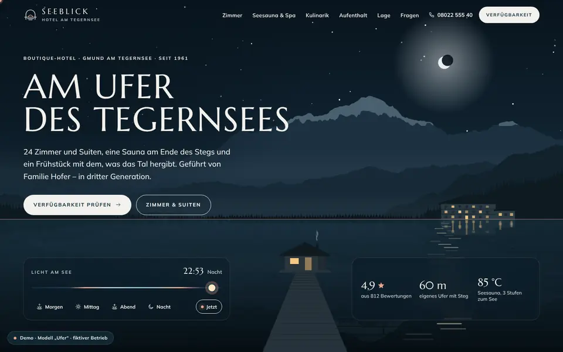
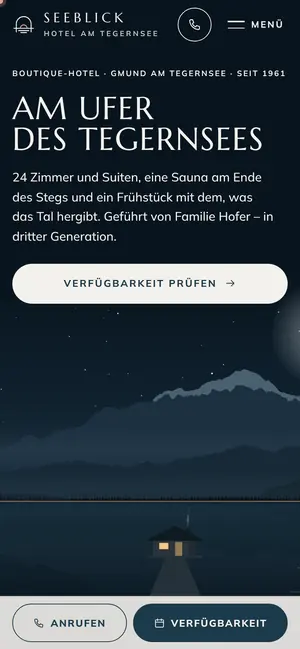

Case Study 08 / 30 · Gastronomie & Hotel
Hotel Seeblick am Tegernsee
Modell „Ufer“
Alpines Boutique-Hotel mit Tag-Nacht-Hero, Zimmer-Explorer, Aufenthaltsplaner und eigenem Buchungskalender.


Ausgangslage
Das Hotel Seeblick ist ein erfundenes Boutique-Hotel mit 24 Zimmern in Gmund am Tegernsee. Gäste wollen Zimmer vergleichen, Seesauna und Küche sehen, für einen Zeitraum und eine Personenzahl einen Preis bekommen und dann anfragen. Die Seite soll Lage und Stimmung spürbar machen und die Buchung bis zur Beispielrechnung abbilden.
Idee
Seeblau, Nebelweiß, Lärchenholz, Tannengrün und Morgenrot als Akzent; Marcellus für die Überschriften, Mulish als Text, die Abschnitte römisch nummeriert. Statt Stockfotos im Hero steht eine SVG-Seelandschaft mit Bergen, Spiegelung, Hotel und Steg, deren Farben stufenlos mit der Tageszeit wechseln. Ruhig und großzügig, so wie du dir einen Tag am Wasser vorstellst.
Was die Seite kann
- Tag/Nacht-HeroSVG-Seelandschaft mit Schieberegler, Schnellwahl Morgen/Mittag/Abend/Nacht und „Jetzt“ nach der Uhrzeit in Gmund; die Paletten werden stufenlos überblendet.
- Zimmer-ExplorerTabs mit Pfeiltasten, Galerie mit Überblendung und Wischgeste, Ausstattungs-Icons und eine Grundriss-Andeutung, die beim Hover die passende Zone hervorhebt.
- Panorama-StreifenDrei Ebenen mit Gipfelnamen, Ufer und Steg in Parallaxe, auf dem Desktop gepinnt, die Tageszeit läuft beim Scrollen von Morgenrot bis Abendrot.
- AufenthaltsplanerInteressen wie Spa, Wandern, Kulinarik oder Rad plus Tempo ergeben einen Tagesvorschlag als Zeitleiste, den du ins Anfrageformular übernimmst.
- Buchungs-WidgetEigener Kalender mit Bereichsauswahl per Tastatur, Preis pro Nacht, Gäste-Stepper, Kategorien mit Kapazitätsprüfung, Beispielrechnung und Alternativen bei „ausgebucht“.
- Anfrageformular mit Validierung und Zusammenfassung, rein clientseitig.
Dein Betrieb
So eine Seite für dich?
Schreib mir kurz, was du anbietest und was deine Website leisten soll. Du bekommst eine ehrliche Einschätzung, was sie kostet und was sie dir bringen kann.
Projekt anfragen